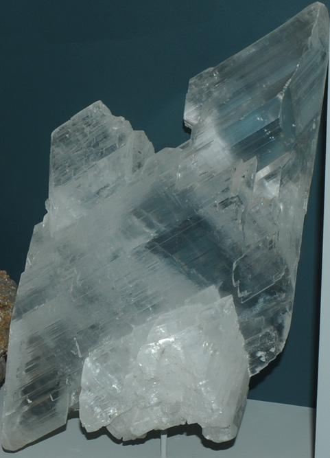
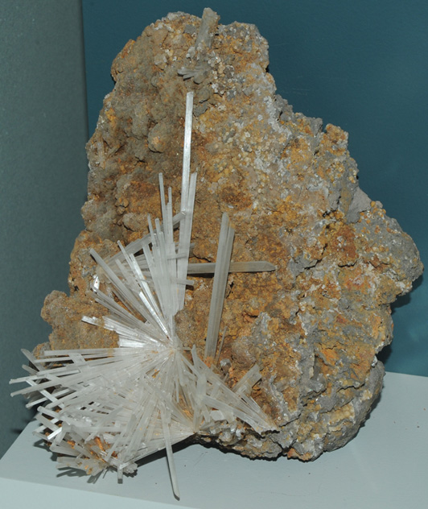

Varieties of Gypsum Crystals
CaSO4.2H2OThese are some of the samples of gypsum which are on display at the Smithsonian Museum of Natural History. The sample at left has an overall dimension about 15 cm. It is from the Santa Rita Mountains, Pima County, Arizona. |
This gypsum sample is from Santa Eulalia, Chihuahua, Mexico and is about 25 cm wide. |
|
This gypsum sample is about 15 cm wide. |
This gypsum sample is from Fuentes de Ebro, Zaragoza, Aragon, Spain. It is about 18 cm wide. |
|
The sample of gypsum at left is similar to the gypsum curls I have seen growing out of cave walls. It is from Santa Eulalia, Chihuahua, Mexico. This kind of formation occurs when one side of the crystal grows more rapidly. It is called a ram's horn formation. The sample is about 12 cm wide. |
The sample at right is about 20 cm wide and is from Naica, Chihuahua, Mexico. This is gypsum formed after glauberite. It is from Camp Verde, Yavapai County, Arizona. It is about 8 cm wide. |  |
|  |
These thin gypsum needles are from San Luis Potosi, Mexico. The sample is about 15 cm wide. This gypsum curl is from Santa Eulalia, Chihuahua, Mexico. It is about 15 cm high. |
This is gypsum formed after halite. It is from Aix, France and the larger cube is about 6 cm across. |
This was the largest sample of gypsum crystals, measuring on the order of a meter across. |
| More varieties of gypsum crystals |
| Selection of common minerals |
| HyperPhysics*****Geophysics | R Nave |